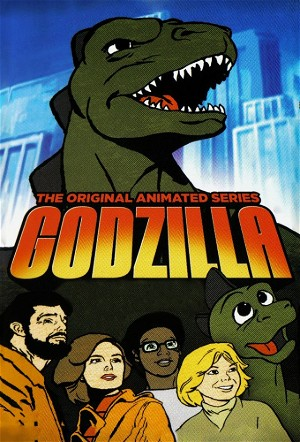

Godzilla (1978)
AdventureAnimationChildrenFamilyScience Fiction
| Year | 1978 |
|---|---|
| Rating | TV-Y7 |
| Status | Completed |
| Seasons | 3 |
| Episodes | 27 |
| Genre | Adventure, Animation, Children, Family, Science Fiction |
The series follows the adventures of a team of scientists on the Calico, a hydrofoil research vessel, headed by Captain Carl Majors. The rest of the crew include scientist Dr. Quinn Darien, her nephew Pete Darien and her research assistant Brock Borden. Also along for the ride is Godzooky, the "cowardly nephew" of Godzilla and Pete's best friend, in a comic foil role in the show. The group often call upon Godzilla by using a special signalling device when in danger, such as attacks by other giant monsters.
Episodes
Specials
| # | Title | Air Date | Synopsis |
|---|---|---|---|
| 1 | A Tribute to Hanna-Barbera Godzilla (1978 - 1980) | — |
Season 1
| # | Title | Air Date | Synopsis |
|---|---|---|---|
| 1 | The Firebird | 1978-09-09 | A mysterious bird with fire powers residing in a volcano leaves to lay eggs in the Arctic. The team and Godzilla try stop the creature before it melts the all the ice and causes worldwide devastation. |
| 2 | The Eartheater | 1978-09-16 | A mysterious creature is eating the earth under San Francisco. Godzilla and the team must stop the creature before it destroys the city. |
| 3 | Attack of the Stone Creature | 1978-09-23 | While investigating an Egyptian pyramid, the team comes under attack by stone creatures built to guard the pyramid. Godzilla must destroy them before they wipe out the team. |
| 4 | The Megavolt Monster | 1978-09-30 | A mysterious creature with electrical powers is attacking ships in the Pacific. Godzilla must stop it before it destroys more ships. |
| 5 | The Seaweed Monster | 1978-10-07 | While diving in the sea near the West Indies, Dr. Darian and Brock are startled when they are attacked by a bizarre mutant life form...a creature composed entirely of seaweed, which continues to grow increasingly larger |
| 6 | The Energy Beast | 1978-10-14 | After a fight with Godzilla, a caterpillar-like monster transforms into him and begins to destroy anything connected to electricity. The gang's friendship with Godzilla is put to the test as they try to prove his innocen |
| 7 | The Colossus of Atlantis | 1978-10-21 | The gang happens across the ancient City of Atlantis and they (including Godzilla) end up imprisoned in the city. They soon discover that all the cities residents are under a spell that can only be broken by destroying t |
| 8 | The Horror of Forgotten Island | 1978-10-28 | After their ship is damaged in a storm, the team ends up on an uncharted island. They soon discover the island is inhabited by a cyclops monster. Worst of all, Godzilla cannot reach them because of a force field guarding |
| 9 | Island of Lost Ships | 1978-11-04 | The team discovers the island of the Sirens. The sirens imprison Captain Majors, Quinn, and Brock and put Godzilla to sleep. Pete and Godzooky must find a way to save the others and escape the island before it disappears |
| 10 | The Magnetic Terror | 1978-11-11 | A magnetic monster is threatening the South Pole. Godzilla and the team must destroy it before it reaches the Pole and destroys the world. |
| 11 | The Breeder Beast | 1978-11-18 | An odd creature goes on the attack in Washington DC. The team discovers that the creature is made of an explosive material and packs enough energy to level the city. Godzilla and the team must find a way to stop it befor |
| 12 | The Sub-Zero Terror | 1978-11-25 | The team becomes stranded in the Himalayas and imprisoned by the Abominable Snowman. Godzilla must find and rescue them before it's too late. |
| 13 | The Time Dragons | 1978-12-02 | The team and Godzilla are, strangely, teleported back to prehistoric times. They must find their way back to the present time without disrupting the past. |
Season 2
| # | Title | Air Date | Synopsis |
|---|---|---|---|
| 1 | Calico Clones | 1979-09-15 | While on their way to visit an oil rig, the team is captured by a mad scientist who has the knowledge to clone people. He plans to make a copy of the crew and use them to steal the oil and make a fortune. The team has to |
| 2 | Microgodzilla | 1979-09-22 | While helping the crew out of a typhoon, Godzilla wanders through a mysterious pink fog. Before long, the strange fog causes Godzilla to start shrinking. Even worse, a fly also inhaled the gas and is now growing to gigan |
| 3 | Ghost Ship | 1979-09-29 | The team makes a fascinating discovery: A German U-boat from World War I trapped in an iceberg. After Godzilla frees it, the team is shocked to see the crew of the U-boat still alive and they also believe the war is stil |
| 4 | The Beast of Storm Island | 1979-10-06 | The team becomes stranded on an island inhabited by a creature named Axor. Axor enslaves Majors, Quinn, and Brock and puts them to work. Pete, Godzuki, and Godzilla must find a way to destroy Axor and save the island's i |
| 5 | The City in the Clouds | 1979-10-13 | The team gets caught in a strange-looking hurricane and end up in a city in the clouds. The inhabitants explain they are there to escape an evil dragon in their old world. Unfortunately, the dragon follows them there. To |
| 6 | The Cyborg Whale | 1979-10-20 | After a lightning strike, a cyborg whale, (a prototype sub used for scientific purposes) suffers a malfunction and steams out of control with Pete and Brock inside. Even worse, the whale is on a collision course with Hon |
| 7 | Valley of the Giants | 1979-10-27 | While blasting, a mining team inadvertently causes a rock slide that opens the side of a mountain exposing a large valley. A short while later the Calico runs aground in a river and while exploring the nearby area wande |
| 8 | Moonlode | 1979-11-03 | While observing the moon with a powerful new telescope located far out in the ocean. Quinn and Brock notice a strange volcanic eruption on the moon that launches an object hurtling towards the earth. A mysterious creatu |
| 9 | The Golden Guardians | 1979-11-10 | The gang runs into a hostile people who worship gold statues. Things get serious when the statues seem to come to life and Godzilla is turned into a gold statue while battling them. The others must free Godzilla and conv |
| 10 | The Macro-Beasts | 1979-11-17 | While investigating an ocean volcano, the team find the volcano oozing a strange liquid that causes sea creatures to turn into giants. The team and Godzilla must find a way to get the creatures back to their normal size |
| 11 | Pacific Peril | 1979-11-24 | When a new island is formed in the Pacific Ocean, the team investigates. Aftershocks from the islands formation end up trapping them in the volcano on the island, which they find is inhabited by giant lizards that eat la |
| 12 | Island of Doom | 1979-12-01 | When a new weather satellite is mysteriously shot down, the team traces the missile's source to an island near Australia. They find the island fortified and under the command of a terrorist organization known as COBRA. T |
| 13 | The Deadly Asteroid | 1979-12-08 | A UFO lands in the Arctic and the team is sent to investigate. They discover a group of ice people from another planet that plan to destroy the Earth with an asteroid the size of the Moon. Majors and Quinn are taken pris |